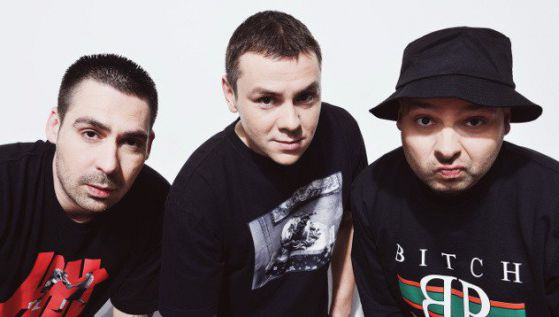
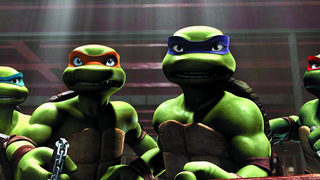
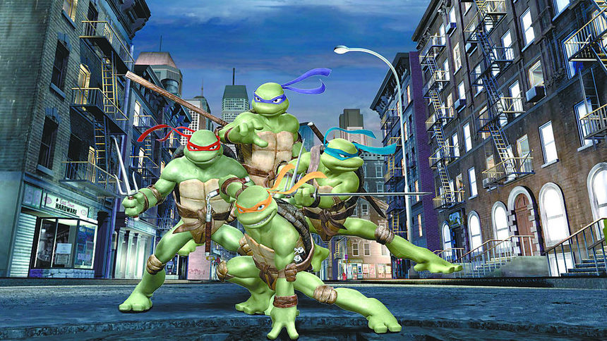
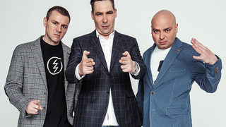
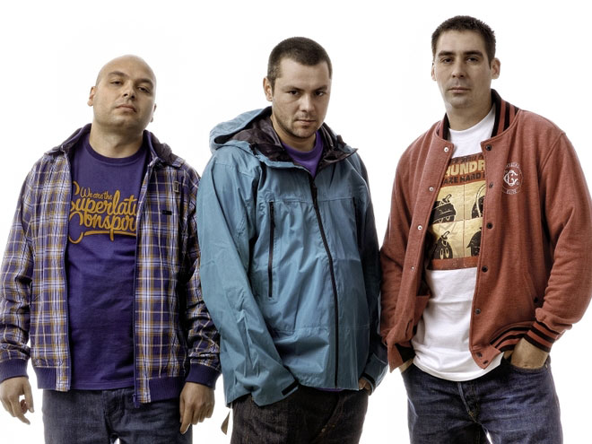
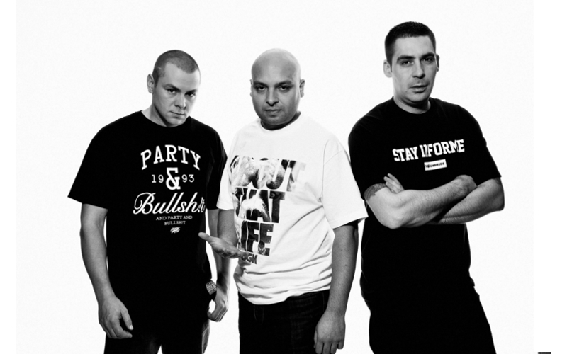
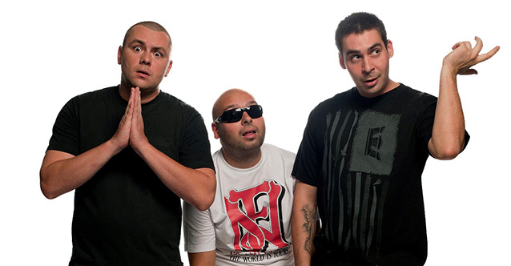

Интересни дейности
| През 2007 г. Ицо Хазарта, Бат Венци и Буч дават гласовете си за българския дублаж на филма „Костенурките нинджа“. Те озвучават съответно Леонардо, Рафаел и Микеланджело, а Донатело е озвучен от актьора Цанко Тасев. Също така Фронтмена на Ъпсурт участва във „Vip Brother 3: Имат ли звездите сърце?“. Шоуто беше благотворително, в помощ на децата на България. Ицо успя да остане през всичките дни в надпревара за първото място в риалитито, но на финала завърши на 4-то място. |  | |
| Снимки от дублажа на филма | ||
|---|---|---|
|  |  | Познатите зелени герои разменят реплики на български език - с елементи на софийски диалект, в стила на рапърите Ицо Хазарта, Бат Венци и Буч от "Ъпсурт", които заедно с актьора Цанко Тасев озвучават четирите мутирали земноводни с имена на ренесансови художници. |
Стил
| През годините Хип-хоп триото си изгражда свой собствен стил, който е запазената марка на Ъпсурт. Текстовете им са по-социални в сравнение с останалите рапъри от България. В лириката им многобройни препратки и трябва „да четеш между редовете“. С всеки техен пореден албум, стилът на изразяване в текстовете се подобрява и Ъпсурт се променят тотално. Промяната се отразява положително на текстовете и музиката им. Дори Ъпсурт си признават, че „сами си вдигнаха летвата“. |  | |
Кариера
| През октомври 2000 г. след осеммесечно турне из страната групата пуска нов сингъл от втория си албум. Едноименното парче от него се казва „Чекай малко“, а албумът е пуснат на пазара през 2001 година. От тази година Ъпсурт са в състав само от трима души, защото Шлеви напуска групата поради честите си ангажименти в чужбина. Третия албум на групата е озаглавен PopFolk. Хитови парчета от него са „Искам твоето тяло“, „PopFolk“ и „Психопат“. | ||
|  |  |  |